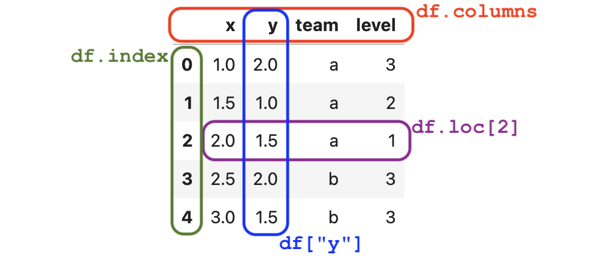

Appendix D — Pandas tutorial#
The Python library Pandas is a versatile toolbox for working with tabular data. Pandas is often used for data loading from different sources, data cleaning, data transformations, statistical analysis, and many other data management tasks. This tutorial will introduce you to the central Pandas functionality with a specific focus on the data manipulation tasks used in statistics.
Click the binder button  or this link
or this link bit.ly/46gBen4
to play with the tutorial notebook interactively.
Pandas overview#
The Pandas library provide many helper functions for data management tasks and statistical calculations. Pandas functionality is organized around data frame objects, which are containers objects for tabular data. A Pandas data frame is roughly equivalent to a spreadsheet that contains data values organized into rows and columns. Similar to spreadsheet software, a Pandas data frame provides functions for computing sums, averages, sorting, filtering values, etc.
The goal of this tutorial is to reach you to use Pandas for practical data management tasks. Becoming good at data management will give you the practical skills you need to apply statistics in real-world scenarios. Indeed, professional statisticians and data scientists spend a large proportion of their time on data extraction, data processing, and data cleaning tasks, which are essential prerequisites consist of the significant part of the work for any statistical analysis. Pandas is like a Swiss Army knife of data manipulations, which makes it very useful for all these data manipulation tasks.
Learning objectives#
In this tutorial, I’m going to show you how to …
TODO import from gdoc
Notebook setup#
Before we begin the tutorial, we we must take care of some preliminary tasks to prepare the notebook environment. Feel free to skip this commands
Installing Pandas and other libraries#
We can install Python package pandas in the current environment using the %pip Jupyter magic command.
%pip install --quiet pandas
[notice] A new release of pip is available: 26.0 -> 26.0.1
[notice] To update, run: pip install --upgrade pip
Note: you may need to restart the kernel to use updated packages.
We’ll use the same command to install some additional Python packages that we’ll need throughout the tutorial.
%pip install --quiet ministats lxml odfpy openpyxl xlrd sqlalchemy
[notice] A new release of pip is available: 26.0 -> 26.0.1
[notice] To update, run: pip install --upgrade pip
Note: you may need to restart the kernel to use updated packages.
The ministats package provides a helper function we’ll use to download datasets.
The lxml, odfpy, openpyxl, and sqlalchemy provide additional functionality
for loading data stored in various file formats.
Setting display options#
Next, we run some commands to configure the display of figures and number formatting.
# high-resolution figures
%matplotlib inline
%config InlineBackend.figure_format = 'retina'
# simplified int and float __repr__
import numpy as np
np.set_printoptions(legacy='1.25')
Download datasets#
We use a helper function from the ministats library
to make sure the datasets/ folder that accompanies this tutorial is present.
# download datasets/ directory if necessary
from ministats import ensure_datasets
ensure_datasets()
datasets/ directory already exists.
With all these preliminaries in place, we can now get the Pandas show started!
Data frames#
Most of Pandas functionality is organized around the data frame objects (DataFrame),
which are containers for tabular data.
A Pandas data frame is analogous to a spreadsheet:
it provides functionality for storing, viewing, and transforming data
organized into rows and columns.
If you understand how DataFrame objects work,
then you’ll know most of what you need to know about data management with Pandas,
so this is why we start the tutorial here.
Creating a data frame from a CSV file#
The most common way to create a data frame object
is to read data from a CSV (Comma-Separated-Values) file.
Let’s look at the raw contents of the sample data file datasets/minimal.csv.
!cat "datasets/minimal.csv"
x,y,team,level
1.0,2.0,a,3
1.5,1.0,a,2
2.0,1.5,a,1
2.5,2.0,b,3
3.0,1.5,b,3
The first line in the CSV file is called the header row
and contains the variables names: x, y, team, and level,
separated by commas.
The next five rows contain the data values separated by commas.
The data corresponds to five players in a computer game.
The columns x and y describe the position of the player,
the variable team indicates which team the player is part of,
and the column level specifies the character’s strength.
We want to load the data file datasets/minimal.csv into Pandas.
We start by importing the pandas library under the alias pd
then call the Pandas function pd.read_csv(),
which is used load data from CSV files.
import pandas as pd
df = pd.read_csv("datasets/minimal.csv")
df
| x | y | team | level | |
|---|---|---|---|---|
| 0 | 1.0 | 2.0 | a | 3 |
| 1 | 1.5 | 1.0 | a | 2 |
| 2 | 2.0 | 1.5 | a | 1 |
| 3 | 2.5 | 2.0 | b | 3 |
| 4 | 3.0 | 1.5 | b | 3 |
The import statement makes all the Pandas functions available under the alias pd,
which is the standard short-name used for Pandas in the data science community.
On the next line,
the function pd.read_csv() reads the contents of the data file datasets/minimal.csv
and stores them into a data frame called df,
which we then display on the final line.
The data frame df is fairly small,
so it makes sense to display it in full.
When working with larger data frames with thousands or millions of rows,
it will not be practical to print all their contents.
We can use the data frame method .head(k)
to prints the first k rows the data frame
to see what the data looks like.
df.head(2)
| x | y | team | level | |
|---|---|---|---|---|
| 0 | 1.0 | 2.0 | a | 3 |
| 1 | 1.5 | 1.0 | a | 2 |
We can also use df.tail(k) to print the last \(k\) rows of the data frame,
or df.sample(k) to select k rows at random from the data frame.
Data frame properties#
We’ll use the data frame df for many of the examples in the remainder of this tutorial,
which is why we gave it a very short name.
Let’s explore the attributes and methods of the data frame df.
First let’s use the Python function type to confirm that df is indeed a data frame object.
type(df)
pandas.core.frame.DataFrame
The above message tells us that the df object
is an instance of the DataFrame class.
Every data frame has the attributes index and columns,
as illustrated in the following figure:

Figure 1. The anatomy is the data frame df with annotations for its different parts.
Rows index#
The index of the data frame contains unique labels
that we use to refer to the rows of the data frame.
The row-index labels in data frames
are analogous to the row numbers used in spreadsheets.
df.index
RangeIndex(start=0, stop=5, step=1)
list(df.index)
[0, 1, 2, 3, 4]
The data frame df uses the “default” range index
that consists of a sequence integer labels: [0,1,2,3,4].
More generally,
index values can be arbitrary labels:
text identifiers, dates, timestamps, etc.
Columns index#
The columns-index attribute .columns tells us the names of the columns (variables) in the data frame.
df.columns
Index(['x', 'y', 'team', 'level'], dtype='object')
These column names were automatically determined based on header row in the CSV file.
Column names usually consist of short textual identifiers for the variable (Python strings).
Spaces and special characters are allowed in column names,
so we could have used names like "x position" and "level (1 to 3)" if we wanted to.
However,
long column names make data manipulation code more difficult to read,
so they are discouraged.
Shape, data types, and momory usage#
Another important property of the data frame is its shape.
df.shape
(5, 4)
The shape of the data frame df is \(5 \times 4\),
which means it has five rows and four columns.
The .dtypes (data types) attribute
tells us what type of data is stored in each of the columns.
df.dtypes
x float64
y float64
team object
level int64
dtype: object
We see that the columns x and y contain floating point numbers,
the column team can contain arbitrary Python objects (in this case Python strings),
and the column level contains integers.
The method .info() provides additional information about the data frame object df,
including missing values (null values) and the total memory usage.
df.info(memory_usage="deep")
<class 'pandas.core.frame.DataFrame'>
RangeIndex: 5 entries, 0 to 4
Data columns (total 4 columns):
# Column Non-Null Count Dtype
--- ------ -------------- -----
0 x 5 non-null float64
1 y 5 non-null float64
2 team 5 non-null object
3 level 5 non-null int64
dtypes: float64(2), int64(1), object(1)
memory usage: 538.0 bytes
The data frame df takes up 502 bytes of memory, which is not a lot.
You don’t have to worry about memory usage for any of the datasets we’ll analyze in this book,
since they are all small- and medium-sized.
Accessing and selecting values#
We use the .loc[] attribute to access rows, columns, and individual values within data frames.
Accessing individual values#
We use the syntax df.loc[<row>,<col>]
to select the value with row label <row>
and column label <col> in the data frame df.
For example,
to extract the value of the variable y
for the third row, we use:
df.loc[2,"y"]
1.5
Note the row label 2
is a particular value within the rows-index df.index
and not the sequential row number:
the row label just happens to be same as the row number in this case.
Selecting entire rows#
To select rows from a data frame,
we use df.loc[<row>,:],
where <row> is the rows-index label
and : is shorthand for “all columns.”
row2 = df.loc[2,:]
row2
x 2.0
y 1.5
team a
level 1
Name: 2, dtype: object
The rows of a data frame are Pandas Series objects,
which are one-dimensional containers for data values.
type(row2)
pandas.core.series.Series
We’ll defer the discussion on Series objects until the next section.
For now,
I just want you to know that series have an index property,
which tells you the labels you must use to access the values in the series.
The index of the series row2 is the same as the columns index of the data frame.
row2.index
Index(['x', 'y', 'team', 'level'], dtype='object')
We can access individual elements using these index labels.
row2["y"]
1.5
If you need iterate through all the rows of the data frame,
you can use the df.iterrows() method as part of a for-loop.
For example, for idx, row in df.iterrows().
Selecting entire columns#
We use the syntax df[<col>] to select the column <col> from a data frame.
For example,
here is how to select the column y from the data frame df.
ys = df["y"]
ys
0 2.0
1 1.0
2 1.5
3 2.0
4 1.5
Name: y, dtype: float64
The column ys is a Pandas series
and its index is the same as the data frame index df.index = [0,1,2,3,4].
ys.index
RangeIndex(start=0, stop=5, step=1)
We can select individual values within the series ys
using the index labels.
ys[2]
1.5
The column-selector syntax df[<col>]
is shorthand for the expression df.loc[:,<col>],
which means “select all the rows for the column <col>.”
We can verify that df["y"] equals df.loc[:,"y"] using the .equals() method.
df["y"].equals( df.loc[:,"y"] )
True
If you need iterate through all the columns of the data frame,
you can use the df.items() method in a for-loop.
For example, for name, col in df.items().
Selecting multiple columns#
We can extract multiple columns from a data frame by passing a list of column names inside the square brackets.
df[["x", "y"]]
| x | y | |
|---|---|---|
| 0 | 1.0 | 2.0 |
| 1 | 1.5 | 1.0 |
| 2 | 2.0 | 1.5 |
| 3 | 2.5 | 2.0 |
| 4 | 3.0 | 1.5 |
The result is a new data frame object
that contains only the x and y columns from the original df.
Selecting only certain rows#
A common task when working with data frames is to select the rows that fit one or more criteria. We usually carry out this selection procedure in two steps:
Build a boolean “selection mask” that contains the value
Truefor the rows we want to keep, and the valueFalsefor the rows we want to filter out.Select the subset of rows from the data frame using the mask. The result is a new data frame that contains only the rows that correspond to the
Truevalues in the selection mask.
For example,
to select the rows from the data frame that are part of team b,
we first build the selection mask.
mask = df["team"] == "b"
mask
0 False
1 False
2 False
3 True
4 True
Name: team, dtype: bool
The rows that match the criterion “team column equal to b”
correspond to the True values in the mask,
while the remaining values are False.
We can now select the desired subset by placing the mask inside the square brackets.
df[mask]
| x | y | team | level | |
|---|---|---|---|---|
| 3 | 2.5 | 2.0 | b | 3 |
| 4 | 3.0 | 1.5 | b | 3 |
The result is a new data frame that contains only the rows that correspond to the True values in the mask series.
We often combine the two steps we described above
into a single expression df[df["team"]=="b"].
This combined expression is a little hard to read at first,
since it contains two pairs of square brackets and two occurrences of the data frame name df,
but you’ll get used to it,
since you’ll see selection expressions many times.
df[df["team"]=="b"]
| x | y | team | level | |
|---|---|---|---|---|
| 3 | 2.5 | 2.0 | b | 3 |
| 4 | 3.0 | 1.5 | b | 3 |
We can use the Python bitwise boolean operators & (AND), | (OR) and ~ (NOT)
to build selection masks with multiple criteria.
For example,
to select the rows with team is b where the x value is greater or equal to 3,
we would use the following expression.
df[(df["team"] == "b") & (df["x"] >= 3)]
| x | y | team | level | |
|---|---|---|---|---|
| 4 | 3.0 | 1.5 | b | 3 |
The selection mask consists of two terms (df["team"]=="b") and (df["x"]>=3)
that are combined with the bitwise AND operator &.
Note the use of extra parentheses to ensure the masks for the two conditions are computed first before the & operation is applied.
If we want to select multiple values of a variable,
we can use the .isin() method and specify a list of values to compare with.
For example,
to build a mask that select all the observations that have level equal to 2 or 3,
we can use the following code.
df["level"].isin([2,3])
0 True
1 True
2 False
3 True
4 True
Name: level, dtype: bool
We see the above mask correctly selects all observations except the one at index 2,
which has level equal to 1.
Creating data frames from Python objects#
We sometimes obtain data in the form of regular Python objects like lists and dictionaries.
If we want to use Pandas functionality to work with this data,
we’ll need to “package” it as a pd.DataFrame object first.
One way to create a data frame object
is to load a Python dictionary whose keys are the column names,
and whose values are lists of the data in each column.
The code below shows how to create a data frame df2
by initializing a pd.DataFrame object from a columns dictionary.
dict_of_columns = {
"x": [1.0, 1.5, 2.0, 2.5, 3.0],
"y": [2.0, 1.0, 1.5, 2.0, 1.5],
"team": ["a", "a", "a", "b", "b"],
"level": [3, 2, 1, 3, 3],
}
df2 = pd.DataFrame(dict_of_columns)
df2
| x | y | team | level | |
|---|---|---|---|---|
| 0 | 1.0 | 2.0 | a | 3 |
| 1 | 1.5 | 1.0 | a | 2 |
| 2 | 2.0 | 1.5 | a | 1 |
| 3 | 2.5 | 2.0 | b | 3 |
| 4 | 3.0 | 1.5 | b | 3 |
The data frame df2
is identical to the data frame df that we loaded from the CSV file earlier.
We can confirm this by calling the .equals() method.
df2.equals(df)
True
We can also create a data frame from a list of observation records. Each record (row) corresponds to the data of one observation.
list_of_records = [
[1.0, 2.0, "a", 3],
[1.5, 1.0, "a", 2],
[2.0, 1.5, "a", 1],
[2.5, 2.0, "b", 3],
[3.0, 1.5, "b", 3],
]
columns = ["x", "y", "team", "level"]
df3 = pd.DataFrame(list_of_records, columns=columns)
When using the list-of-records approach,
Pandas can’t determine the names of the columns automatically,
so we pass in the list of column names as the columns argument.
The data frame df3 created from the lists of records
is identical to the data frame df that saw earlier.
df3.equals(df)
True
A third way to create a data frame is to pass in a list of dictionary objects.
list_of_dicts = [
dict(x=1.0, y=2.0, team="a", level=3),
dict(x=1.5, y=1.0, team="a", level=2),
dict(x=2.0, y=1.5, team="a", level=1),
dict(x=2.5, y=2.0, team="b", level=3),
dict(x=3.0, y=1.5, team="b", level=3),
]
df4 = pd.DataFrame(list_of_dicts)
Once again,
the data frame df4 we obtain in this way
is identical to the original df.
df4.equals(df)
True
Data frames exercises#
I invite you to try solving the following exercises before continuing with the rest of the tutorial.
Exercise 1: Select a column#
Select the column that contains the variable x from the data frame df.
# Instructions: write your Pandas code in this cell
#@titlesolution Exercise 1 select-xs-from-df
df["x"]
0 1.0
1 1.5
2 2.0
3 2.5
4 3.0
Name: x, dtype: float64
Exercise 2: Select rows#
Select the rows from the data frame df that correspond to the players on team a.
# Instructions: write your Pandas code in this cell
#@titlesolution Exercise 2 select-rows-from-df
df[df["team"]=="a"]
| x | y | team | level | |
|---|---|---|---|---|
| 0 | 1.0 | 2.0 | a | 3 |
| 1 | 1.5 | 1.0 | a | 2 |
| 2 | 2.0 | 1.5 | a | 1 |
Series#
Pandas Series objects are list-like containers of values.
The rows and the and the columns of a data frame are series objects.
Let’s extract the column y from the data frame df
and use it to illustrate the properties of methods of series objects.
ys = df["y"]
ys
0 2.0
1 1.0
2 1.5
3 2.0
4 1.5
Name: y, dtype: float64
The numbers printed on the left are the series index.
The numbers printed on the right are the values in the series.
The last line shows the series name and the data type of the values.
We can call the .info() method on the series ys
to display detailed information about it.
ys.info()
<class 'pandas.core.series.Series'>
RangeIndex: 5 entries, 0 to 4
Series name: y
Non-Null Count Dtype
-------------- -----
5 non-null float64
dtypes: float64(1)
memory usage: 168.0 bytes
Series properties#
The series index tells us the labels we must use to access the values in the series.
The series ys has the same index as the data frame df.
ys.index
RangeIndex(start=0, stop=5, step=1)
We can access the individual elements of the series
by specifying an index label inside square brackets.
The first element in the series is at index 0,
so we access it as follows:
ys[0]
2.0
We can select a range of elements from the series using the slice notation inside the square brackets.
ys[0:3]
0 2.0
1 1.0
2 1.5
Name: y, dtype: float64
The slice notation 0:3 refers to the list of indices [0,1,2].
The result of ys[0:3] is a new series
that contains a subset of the original series
that contains the first three elements of ys.
The values attributes returns all the values stored in the series as a NumPy array.
ys.values
array([2. , 1. , 1.5, 2. , 1.5])
Series calculations#
Series have methods for performing common calculations.
For example,
the method .count() counts the number of values in the series.
ys.count()
5
The method .value_counts() counts the number of times each value occurs in the series.
ys.value_counts()
y
2.0 2
1.5 2
1.0 1
Name: count, dtype: int64
You can perform arithmetic operations like +, -, *, /, ** with series.
For example,
we can calculate the squared y-value plus 1 for each player
using the following code.
ys**2 + 1
0 5.00
1 2.00
2 3.25
3 5.00
4 3.25
Name: y, dtype: float64
We can also apply arbitrary numpy functions to series.
For example,
here is how we can compute the square root of the y-values.
import numpy as np
np.sqrt(ys)
0 1.414214
1 1.000000
2 1.224745
3 1.414214
4 1.224745
Name: y, dtype: float64
The method .sum() computes the sum of the values in the series.
ys.sum()
8.0
We can calculate the arithmetic mean \(\overline{y} = \frac{1}{5}\sum y_i\)
of the values in the series ys by calling its .mean() method.
ys.mean() # == ys.sum() / ys.count()
1.6
Series have numerous other methods for computing summary statistics
like .min(), .max(), .median(), .std(), etc.
The following table lists commonly used statistics method available on series.
Method name |
Descriptions |
Series |
DataFrame |
|---|---|---|---|
|
count of non-null values |
✓ |
✓ |
|
mean (average) |
✓ |
✓ |
|
median |
✓ |
✓ |
|
standard deviation |
✓ |
✓ |
|
variance |
✓ |
✓ |
|
skewness |
✓ |
✓ |
|
kurtosis |
✓ |
✓ |
|
minimum value |
✓ |
✓ |
|
maximum value |
✓ |
✓ |
|
index label of the minimum |
✓ |
✓ |
|
index label of the maximum |
✓ |
✓ |
|
quantile function |
✓ |
✓ |
|
mode |
✓ |
✓ |
|
sum |
✓ |
✓ |
|
product |
✓ |
✓ |
|
correlation |
✓ |
✓ |
|
covariance |
✓ |
✓ |
|
ranks |
✓ |
✓ |
The .quantile(q) method can be used to compute quartiles (use q multiple of 0.25)
and percentiles (use q multiple of 0.01).
The same methods are actually available on Pandas DataFrame objects.
For example,
we can compute the mean of all the numeric columns in the data frame df
by calling its .mean() method.
df.mean(numeric_only=True)
x 2.0
y 1.6
level 2.4
dtype: float64
We used the option numeric_only=True to avoid computing the mean of the team column,
which is not numeric.
The results show the mean of the x, y, and level columns packaged as a Pandas series.
Pandas also provides two methods
that allow us to compute several statistics at once.
Use the .aggregate(<list>) method to compute
multiple statistics specified as a list.
ys.aggregate(["count", "sum", "mean"])
count 5.0
sum 8.0
mean 1.6
Name: y, dtype: float64
The method .describe() computes a descriptive summary
that consists the standard descriptive statistics including
the mean,
the standard deviation,
and the five-number summary (min, Q1, Q2, Q2, max).
ys.describe()
count 5.00000
mean 1.60000
std 0.41833
min 1.00000
25% 1.50000
50% 1.50000
75% 2.00000
max 2.00000
Name: y, dtype: float64
Creating Pandas series from Python lists#
We sometimes create Pandas Series objects from Python lists in order to benefit
all the calculation and aggregation methods available for series objects.
For example,
the code below creates a Pandas series
from a Python list of three numbers then computes their mean,
variance, and standard deviation.
s = pd.Series([5, 10, 15])
s
0 5
1 10
2 15
dtype: int64
s.aggregate(["mean", "var", "std"])
mean 10.0
var 25.0
std 5.0
dtype: float64
Series exercises#
Exercise 3#
TODO
Exercise 4#
TODO
Sorting, grouping, and aggregation#
Sorting and ranking#
We can sort the rows of the data frame based on the values of the column <col>
by calling the method .sort_values(<col>).
For example,
here is how we can sort the data frame by df by the team column.
df.sort_values("level")
| x | y | team | level | |
|---|---|---|---|---|
| 2 | 2.0 | 1.5 | a | 1 |
| 1 | 1.5 | 1.0 | a | 2 |
| 0 | 1.0 | 2.0 | a | 3 |
| 3 | 2.5 | 2.0 | b | 3 |
| 4 | 3.0 | 1.5 | b | 3 |
The default behaviour of .sort_values() is to sort the values in ascending order.
We can use the option ascending=False to sort values in descending order.
Note the index in the sorted data frame is now out of order.
since the rows order is now based on the level column,
and not based on their index labels.
If we want the re-index the data frame,
we can call the method .reset_index(drop=True).
df.sort_values("level").reset_index(drop=True)
| x | y | team | level | |
|---|---|---|---|---|
| 0 | 2.0 | 1.5 | a | 1 |
| 1 | 1.5 | 1.0 | a | 2 |
| 2 | 1.0 | 2.0 | a | 3 |
| 3 | 2.5 | 2.0 | b | 3 |
| 4 | 3.0 | 1.5 | b | 3 |
We can sort by multiple columns using the syntax .sort_values(["<col1>","<col2>"]),
which will sort the rows based the values of the column <col1> first then by <col2>.
For example,
to sort the data frame df by y then by x,
we would use the code df.sort_values(["y","x"]).
Ranking values#
We can obtain the sort-order of values in a data frame
by calling the .rank() method.
The rank of an element in a series tells us the position it appears in when the list is sorted.
Here is how to obtain the ranks of the y-values in the data frame df.
df["y"].rank(ascending=True)
0 4.5
1 1.0
2 2.5
3 4.5
4 2.5
Name: y, dtype: float64
This result tells us that value at index 1 is the smallest (first rank in ascending order).
The value 1.5 appears both at index 2 and 4 so we have a tie.
The default method for dealing with ties,
is to assign the average of the two ranks to both values:
we assign the rank 2.5 to both of them (the average between second and third rank).
The last two values are also tied,
so we assign rank 4.5 to both of them.
You can obtain different way to handle ties
by passing the method option when calling .rank().
Group by and aggregation#
A common calculation we need to perform in statistics
is to compare different groups of observations,
where the grouping is determined by the values in one of the columns.
The Pandas method .groupby() is used for this purpose.
For example,
we can group the observations in the data frame df by the value of the team variable using the following code.
df.groupby("team")
<pandas.core.groupby.generic.DataFrameGroupBy object at 0x7fef6a7fe020>
The result of calling the .groupby("team") method is a DataFrameGroupBy object
that contains the subsets of the data frame,
which correspond to the different values of the team variable.
The .groupby("mean") method starts
a parallel computation on the two subsets of rows:
the rows of the players from team a (df[df["team"]=="a"])
and rows of the players from team b (df[df["team"]=="b"]).
We can use the DataFrameGroupBy object to do further selection of variables and perform computations.
For example,
to compute the mean value of the x variable within the two groups,
we run the following code.
df.groupby("team")["y"].mean()
team
a 1.50
b 1.75
Name: y, dtype: float64
The result is a series containing the mean for the two groups.
The first row contains the value df[df["team"]=="a"]["y"].mean().
The second row’s value is df[df["team"]=="b"]["y"].mean().
Note the result is a series indexed by the values of the team variable (the team labels a and b).
We often call the .aggregate() method after the goupyby() method
to compute multiple statistics for the two groups.
For example,
to compute the count, the sum, and the mean value in each group
we use the following code.
df.groupby("team")["y"].aggregate(["count", "sum", "mean"])
| count | sum | mean | |
|---|---|---|---|
| team | |||
| a | 3 | 4.5 | 1.50 |
| b | 2 | 3.5 | 1.75 |
The result is a data frame
whose rows correspond to values of the group-by variable team,
and whose columns are the statistics we wanted to calculate.
Sidenote 1: Pandas method chaining#
The groupby example we saw in the previous section
illustrates the “method chaining” pattern,
which is used often in Pandas calculations.
We can “chain” together any number of Pandas methods
to perform complicated data selection and aggregation operations.
We start with the data frame df,
call its .goupyby() method,
select the y column using the square brackets ["y"],
then call the method .aggregate() on the result.
This is “chain” includes contains two methods,
but it is common to chain together three or more methods.
This ability to carry out data manipulations using a sequence of simple method applications
is one of the main benefits of using Pandas for data processing.
Method chaining operations work because Pandas Series, DataFrame,
and GroupBy objects all offer the same methods,
so the output of one calculation can be fed into the next.
Sidenote 2: Line-continuation strategies#
When using method chaining,
the command chains tend to become very long
and often don’t fit on a single line of input.
We can split Pandas expressions on multiple lines
using the Python line-continuation character \ (backslash),
as shown in the code example below.
df.groupby("team")["y"] \
.aggregate(["sum", "count", "mean"])
| sum | count | mean | |
|---|---|---|---|
| team | |||
| a | 4.5 | 3 | 1.50 |
| b | 3.5 | 2 | 1.75 |
The result of this code cell
is identical to the result we saw above,
however writing the code on two lines using the line-continuation character \
makes the operations are easier to read.
It is customary (but not required)
to indent the second line by a few spaces so the dots line up.
The indentation gives a visual appearance of a “bullet list”
of operation we apply to a data frame.
Another way to get the benefits of multi-line commands is to wrap the entire expression in parentheses.
(df
.groupby("team")["y"]
.aggregate(["sum", "count", "mean"])
)
| sum | count | mean | |
|---|---|---|---|
| team | |||
| a | 4.5 | 3 | 1.50 |
| b | 3.5 | 2 | 1.75 |
The result is identical to the result we obtained earlier.
This works because we’re allowed to wrap any Python expression in parentheses without changing its value.
We do this wrapping
because newlines are ignored inside parentheses,
so we’re allowed to break the expression onto multiple lines
without the need to add the character \ at the end of each line.
Don’t worry too much about the line-continuation and parentheses tricks for multi-line expressions. Most of the Pandas expressions you’ll see in this tutorial will fit on a single line, but I wanted to show you some multi-line expressions, so you won’t be wondering what is going on if you see it.
Counting values#
We’re often interested in the counts (frequencies)
of different values that occur in a particular column.
The .value_counts() can do this counting for us.
For example,
here is how we can count the number of players on each team.
df["team"].value_counts()
team
a 3
b 2
Name: count, dtype: int64
The is sometimes called a one-way table or a frequency table.
We can also count combinations of values,
which is called a two-way table.
We can obtain a two-way table y calling the Pandas function pd.crosstab
and specifying which variable we want to use for the index
and which variable we want to use as the columns of the resulting table.
pd.crosstab(index=df["team"],
columns=df["level"])
| level | 1 | 2 | 3 |
|---|---|---|---|
| team | |||
| a | 1 | 1 | 1 |
| b | 0 | 0 | 2 |
See Section 1.3.4 in the book,
for additional examples of the pd.crosstab function,
including different use cases of the options margin and normalize.
Using pivot_table for aggregation#
The .pivot_table(...) method produces a spreadsheet-style pivot table
that shows aggregated values, grouped into rows and columns that correspond to categorical columns in the data.
To produce the pivot table must specify:
values: the column to be aggregatedaggfunc: the function used to aggregate the valuesindex: the variable to group by for the pivot table rowscolumns: the variable to group by for the pivot table columns
For example,
the following code produces a pivot table
that display the average y coordinates,
for different teams (rows) and different levels (columns).
df.pivot_table(values="y",
aggfunc="mean",
index="team",
columns="level")
| level | 1 | 2 | 3 |
|---|---|---|---|
| team | |||
| a | 1.5 | 1.0 | 2.00 |
| b | NaN | NaN | 1.75 |
Sorting and aggregation exercises#
Exercise 5#
TODO
Exercise 6#
TODO
Data transformations#
Pandas provides dozens of methods for modifying the shape, the index, the columns, and the data types of data frames. Below is a list of common data transformations that you’re likely to encounter when preparing datasets for statistical analysis.
Renaming the column names of a data frame.
Reshaping and restructuring the way the data is organized.
Imputation: filling in missing values based on the surrounding data or a fixed constant.
Merging data from multiple sources.
Filtering to select the subset of the data we’re interested in.
Splitting up columns that contain multiple values.
Data cleaning procedures for identifying and correcting bad data. Data cleaning procedures include dealing with missing values, outliers, coding errors, duplicate observations, and other inconsistencies in the data.
In this section, we’ll show examples of the most common data frame transformations, and defer the data cleaning and outlier detection topics until the next section.
Adding new columns#
We can add a new column to a data frame by assigning data to a new column name as shown below.
df_with_xy = df.copy()
df_with_xy["xy"] = df["x"] * df["y"]
df_with_xy
| x | y | team | level | xy | |
|---|---|---|---|---|---|
| 0 | 1.0 | 2.0 | a | 3 | 2.0 |
| 1 | 1.5 | 1.0 | a | 2 | 1.5 |
| 2 | 2.0 | 1.5 | a | 1 | 3.0 |
| 3 | 2.5 | 2.0 | b | 3 | 5.0 |
| 4 | 3.0 | 1.5 | b | 3 | 4.5 |
The first line makes a copy of the data frame df
and saves it as a new variable called df_with_xy.
The second line computes the product of the x and y columns from the original df
and assigns the result to a new column named xy in df_with_xy.
We then display the modified data frame df_with_xy
to show the presence the additional column.
Avoiding in-place modifications#
The code example above follows best practices for variable naming:
it uses a different variable name for the modified data frame.
The new variable name df_with_xy
makes it clear this is a modified data frame
and not the same as the original df,
which remains unchanged.
Following this naming convention
makes your code easier to reason about
and avoids many kinds of confusion.
This convention is particularly important in notebook environments,
where code cells can be executed out of order.
Suppose we didn’t follow the convention,
and instead added the column xy to the original df.
In other words,
we’re modifying the data frame df without changing its name.
In this case,
we would need to keep track of which “version” of df
we’re working with in each code cell.
In all the earlier code cells,
the data frame df had columns ["x", "y", "team", "level"],
while later on df has columns ["x", "y", "team", "level", "xy"].
Keeping track of different “versions” of df adds unnecessary cognitive load,
so it’s best if we can avoid it:
use different names for different objects!
The good news is that most of the Pandas transformation methods
do not modify data frames,
but instead return a new data frame,
so you don’t have to manually do the .copy() operation.
You just have to remember to save the transformed version of the data frame as a new variable.
The assign method#
The .assign() method is another way to add new columns to a data frame.
df_with_xy = df.assign(xy = df["x"] * df["y"])
The .assign() method returns a new data frame without modifying the original df.
We save the result to a new variable df_with_xy,
so the end result
is the same as the data frame df_with_xy
that we obtained earlier using the copy-then-modify approach.
The main reason for using the .assign() method
is because it allows us to perform multiple transformations at once
by using the method chaining pattern.
The following example shows how we can perform four different transformation
to the data frame df in a single statement.
df.assign(xy = df["x"] * df["y"]) \
.assign(z = 1) \
.assign(r = np.sqrt(df["x"]**2 + df["y"]**2)) \
.assign(team = df["team"].str.upper())
| x | y | team | level | xy | z | r | |
|---|---|---|---|---|---|---|---|
| 0 | 1.0 | 2.0 | A | 3 | 2.0 | 1 | 2.236068 |
| 1 | 1.5 | 1.0 | A | 2 | 1.5 | 1 | 1.802776 |
| 2 | 2.0 | 1.5 | A | 1 | 3.0 | 1 | 2.500000 |
| 3 | 2.5 | 2.0 | B | 3 | 5.0 | 1 | 3.201562 |
| 4 | 3.0 | 1.5 | B | 3 | 4.5 | 1 | 3.354102 |
The effect of the first .assign() operation
is to add the new column xy that contains the product of x and y values.
The second operation adds a new constant column z equal to 1.
The third operation adds the column r
computed from the formula \(r = \sqrt{x^2 + y^2}\),
which is the distance between the point with coordinates \((x,y)\) and the origin.
Note we used the function np.sqrt from the NumPy module
to perform the square root operation.
The last assignment operation
transforms the values in the team column to uppercase.
The apply method#
The .apply() method allows you to apply a function
to every row or every column in the data frame.
The following example shows how
we can perform four transformations
by applying a function on each row of the data frame.
def four_ops(row):
row["xy"] = row["x"] * row["y"]
row["z"] = 1
row["r"] = np.sqrt(row["x"]**2 + row["y"]**2)
row["team"] = row["team"].upper()
return row
df.apply(four_ops, axis=1)
| x | y | team | level | xy | z | r | |
|---|---|---|---|---|---|---|---|
| 0 | 1.0 | 2.0 | A | 3 | 2.0 | 1 | 2.236068 |
| 1 | 1.5 | 1.0 | A | 2 | 1.5 | 1 | 1.802776 |
| 2 | 2.0 | 1.5 | A | 1 | 3.0 | 1 | 2.500000 |
| 3 | 2.5 | 2.0 | B | 3 | 5.0 | 1 | 3.201562 |
| 4 | 3.0 | 1.5 | B | 3 | 4.5 | 1 | 3.354102 |
Dropping rows and and columns#
Pandas provides several methods for removing rows and columns of a data frame.
For example,
to drop the first (index 0), third (index 2), and fifth (index 4) rows of the data frame df
we can use the .drop() method and pass in the list of indices to remove as the index argument.
df.drop(index=[0,2,4])
| x | y | team | level | |
|---|---|---|---|---|
| 1 | 1.5 | 1.0 | a | 2 |
| 3 | 2.5 | 2.0 | b | 3 |
The result is a new data frame
that contains only the second row (index 1)
and the fourth row (index 3).
To remove columns from a data frame,
use .drop() method with the columns option.
Here is the code to delete the column level.
df.drop(columns=["level"])
| x | y | team | |
|---|---|---|---|
| 0 | 1.0 | 2.0 | a |
| 1 | 1.5 | 1.0 | a |
| 2 | 2.0 | 1.5 | a |
| 3 | 2.5 | 2.0 | b |
| 4 | 3.0 | 1.5 | b |
The result is a new data frame that no longer has the level column.
An alternative way to obtain the same result
is to select the three columns
that we want to keep using the code df[["x", "y", "team"]].
Pandas also provides the methods .dropna() for removing rows that contain missing values
and .drop_duplicates() for removing rows that contain duplicate data.
We’ll learn more about these methods in the section on data cleaning later on.
Renaming columns and values#
To change the column names of a data frame,
we can use the .rename() method and pass in to the columns argument
a Python dictionary of the replacements we want to make.
For example,
the code below renames the columns names team and level to uppercase.
df.rename(columns={"team":"TEAM", "level":"LEVEL"})
| x | y | TEAM | LEVEL | |
|---|---|---|---|---|
| 0 | 1.0 | 2.0 | a | 3 |
| 1 | 1.5 | 1.0 | a | 2 |
| 2 | 2.0 | 1.5 | a | 1 |
| 3 | 2.5 | 2.0 | b | 3 |
| 4 | 3.0 | 1.5 | b | 3 |
The dictionary {"team":"TEAM", "level":"LEVEL"} specifies the old:new replacement pairs
for the column names.
To rename the values in the data frame,
we can use the .replace() method,
passing in a Python dictionary of replacements
that we want to perform on the values in each column.
For example,
here is the code for replacing the values in the team column to uppercase letters.
team_mapping = {"a":"A", "b":"B"}
df.replace({"team":team_mapping})
| x | y | team | level | |
|---|---|---|---|---|
| 0 | 1.0 | 2.0 | A | 3 |
| 1 | 1.5 | 1.0 | A | 2 |
| 2 | 2.0 | 1.5 | A | 1 |
| 3 | 2.5 | 2.0 | B | 3 |
| 4 | 3.0 | 1.5 | B | 3 |
The dictionary {"a":"A", "b":"B"} specifies the old:new replacement pairs
specifies the old:new replacement pairs for the values.
Reshaping data frames#
One of the most common transformations we need to do with data frames, is to convert them from “wide” format to “long” format. Data tables in “wide” format contain multiple observations in each row, with the column headers conveying some information about the observations in the different columns. The code example below shows a sample data frame with the viewership numbers for a TV show organized by season (rows) and by episode (columns).
views_data = {
"season": ["Season 1", "Season 2"],
"Episode 1": [1000, 10000],
"Episode 2": [2000, 20000],
"Episode 3": [3000, 30000],
}
tvwide = pd.DataFrame(views_data)
tvwide
| season | Episode 1 | Episode 2 | Episode 3 | |
|---|---|---|---|---|
| 0 | Season 1 | 1000 | 2000 | 3000 |
| 1 | Season 2 | 10000 | 20000 | 30000 |
This organizational structure is very commonly used
for data entered manually into in a spreadsheet,
since it’s easy for humans to interpret values based on the columns they appear in.
However,
working with datasets complicates data selection, grouping, and filtering operations.
Data scientists and statisticians prefer to work with “long” format datasets,
where each row corresponds to a single observation,
and each column corresponds to a single variable,
like the minimal dataset we discussed earlier.
The Pandas operation for converting “wide” data to “long” data is called melt,
which is an analogy to melting a wide block of ice into a vertical stream of water.
The method .melt() requires several arguments
to specify how to treat each of the columns in the input data frame,
and the names we want to assign to the columns in the output data frame.
Let’s look at the code example first,
and explain the arguments after.
tvlong = tvwide.melt(id_vars=["season"],
var_name="episode",
value_name="views")
tvlong
| season | episode | views | |
|---|---|---|---|
| 0 | Season 1 | Episode 1 | 1000 |
| 1 | Season 2 | Episode 1 | 10000 |
| 2 | Season 1 | Episode 2 | 2000 |
| 3 | Season 2 | Episode 2 | 20000 |
| 4 | Season 1 | Episode 3 | 3000 |
| 5 | Season 2 | Episode 3 | 30000 |
The argument id_vars specifies the column that contain identifier variables for each row,
which is the column season in the data frame tvwide.
All other columns are treated as “value variables”
that identify the properties of all the values in that column.
In the above example,
the values variables are the columns Episode 1, Episode 2, and Episode 3.
The argument var_name allows us to choose the name for the variable
that is represented in the different columns,
which we set to the descriptive name episode.
Finally,
the value_name argument determines name of the value column in the melted data frame,
which we set to views since this what the numbers represent.
The result tvlong has six rows,
one for each observation in the original data frame tvwide.
Each row in tvlong corresponds to one episode of the TV show,
and each column corresponds to a different variable for that episode
(the season, the episode, and the number of views).
The rows in the data frame tvlong
have are ordered strangely after the melt operation.
It would make more sense
for the all the Season 1 episodes to appear first,
followed by Season 2.
We can fix the sort order
by calling the .sort_values() method
and specifying the column names by which we want the data to be sorted.
tvlong.sort_values(by=["season", "episode"]) \
.reset_index(drop=True)
| season | episode | views | |
|---|---|---|---|
| 0 | Season 1 | Episode 1 | 1000 |
| 1 | Season 1 | Episode 2 | 2000 |
| 2 | Season 1 | Episode 3 | 3000 |
| 3 | Season 2 | Episode 1 | 10000 |
| 4 | Season 2 | Episode 2 | 20000 |
| 5 | Season 2 | Episode 3 | 30000 |
The data is now sorted by season first then by episode,
which is the natural order for this data.
The also called the method .reset_index()
to re-index the rows using the sequential numbering
according to the new sort order.
Tidy data#
The concept of tidy data is a convention for structuring datasets that makes them easy to work with. A tidy dataset has the following characteristics:
Each column contains the values for one variable.
Each row contains the values for one observation.
Each data cell contains a single value.
The data frame tvlong we saw in the previous has all three characteristics:
each column contains a different variable,
each row contains the data for one episode,
and each cell contains one piece of information.
In contrast,
the data frame tvwide is not tidy data,
since each row contains the information from three episodes.
An example of a cell that contains multiple values
would be the case where age and gender are stored together,
where the code 32F would indicate a 32 year old female.
This is not tidy and will complicate all selection and filtering procedures.
It would be preferable to store age and sex as two separate columns,
and put the values 32 and F in the corresponding columns.
The tidy data convention for organizing datasets
makes it easy to select subsets of the data based on values of different columns,
and perform arbitrary transformations, groupings, and aggregations.
For example,
the data frame tvlong allows us filter and group views
based on any combination of the season and episode variables.
Another reason for working with tidy data is that it makes data visualization easier. We can create advanced Seaborn plots by simply mapping column names to different attributes of the graphs like x- and y-positions, colors, sizes, and marker types. We’ll learn more about this in the Seaborn tutorial (Appendix E).
Perhaps the biggest reason behind the popularity of the tidy data convention is that it standardizes the formatting of datasets. When starting to work on a new tidy dataset, you don’t waste any time trying to understand how the data is structured, since you know all the variables are in different columns, and each row corresponds to a different observation.
“Tidy datasets are all alike, but every messy dataset is messy in its own way.” —Hadley Wickham
Indeed, whenever encountering datasets that are don’t have the tidy data characteristics, data scientist will first spend the tidying it up.
String methods#
You can use the .str prefix to access string manipulation methods like
.str.split(), .str.startswith(), .str.strip(), etc.
Any operation that you can perform on a Python string,
you can also perform on Pandas series by calling the appropriate str-method.
For example,
suppose we have a data frame ppl_df
with a column agesex that contain the age and sex information as a single string.
ppl_df = pd.DataFrame({
"names": ["Jane", "John", "Jill"],
"agesex": ["32F", "20M", "21F"]
})
ppl_df
| names | agesex | |
|---|---|---|
| 0 | Jane | 32F |
| 1 | John | 20M |
| 2 | Jill | 21F |
We can split the agesex column into separate age with sex columns
using the following code.
ages = ppl_df["agesex"].str[0:-1].astype(int)
sexes = ppl_df["agesex"].str[-1]
ppl_df2 = ppl_df.drop(columns=["agesex"])
ppl_df2["age"] = ages
ppl_df2["sex"] = sexes
ppl_df2
| names | age | sex | |
|---|---|---|---|
| 0 | Jane | 32 | F |
| 1 | John | 20 | M |
| 2 | Jill | 21 | F |
Another way to extract the two values would
be to use the .str.extract() method
with a regular expression .str.extract("(?P<age>\\d*)(?P<sex>[MF])").
Merging data frames#
We sometimes need to combine data from multiple data frames.
For example,
suppose we’re given a data frame levels_info with additional info about
the game characters’ life and power depending their level in the game.
# levels_info table (one row per level)
levels_info = pd.DataFrame({
"lvl": [1, 2, 3],
"life": [100, 200, 300],
"power": [10, 20, 30],
})
levels_info
| lvl | life | power | |
|---|---|---|---|
| 0 | 1 | 100 | 10 |
| 1 | 2 | 200 | 20 |
| 2 | 3 | 300 | 30 |
We can add this information
to the players data frame df
by calling the method pd.merge.
We link the information in the two data frames
by matching between the level column in df
and the lvl column in the levels_info data frame.
pd.merge(left=df, right=levels_info,
left_on="level", right_on="lvl")
| x | y | team | level | lvl | life | power | |
|---|---|---|---|---|---|---|---|
| 0 | 1.0 | 2.0 | a | 3 | 3 | 300 | 30 |
| 1 | 1.5 | 1.0 | a | 2 | 2 | 200 | 20 |
| 2 | 2.0 | 1.5 | a | 1 | 1 | 100 | 10 |
| 3 | 2.5 | 2.0 | b | 3 | 3 | 300 | 30 |
| 4 | 3.0 | 1.5 | b | 3 | 3 | 300 | 30 |
Another method for combining data frames include df.join()
which uses the index to matches the rows based data frames.
Concatenating data frames#
Sometimes we need to extend a data frame by adding a new row of observations.
We can use the pd.concat function to concatenate two data frames,
as shown below.
new_df = pd.DataFrame([{"x":2, "y":3, "team":"b", "level":2}])
pd.concat([df,new_df], axis="index", ignore_index=True)
| x | y | team | level | |
|---|---|---|---|---|
| 0 | 1.0 | 2.0 | a | 3 |
| 1 | 1.5 | 1.0 | a | 2 |
| 2 | 2.0 | 1.5 | a | 1 |
| 3 | 2.5 | 2.0 | b | 3 |
| 4 | 3.0 | 1.5 | b | 3 |
| 5 | 2.0 | 3.0 | b | 2 |
Data type conversions#
The method .astype allows us to transform a column into a different data type.
For example,
the level column in the data frame df has data type int64,
which stores integers as 64 bits.
Using int64 allows us to store very large values,
but this is excessive given the largest number we store in this column is 3.
df["level"].dtype
dtype('int64')
If we convert the column level to data type int8,
it will take up eight times less space.
df["level"].astype(np.int8)
0 3
1 2
2 1
3 3
4 3
Name: level, dtype: int8
One-hot and dummy coding for categorical variables#
We often need to convert categorical variables into numerical values
to use them in statistics and machine learning models.
The key idea is to represent the different values as separate columns
that contain indicator variables.
An indicator variable \(\texttt{var}_{\texttt{val}}\)
is a variable that is equal to \(1\)
when the categorical variable var has the value val,
else is equal to \(0\).
The one-hot encoding of a categorical variable with \(K\) possible values
requires \(K\) different columns,
named after the value they encode.
The Pandas function pd.get_dummies() performs this encoding.
For example,
the one-hot encoding of the variable team looks like this:
pd.get_dummies(df["team"],
dtype=int,
prefix="team")
| team_a | team_b | |
|---|---|---|
| 0 | 1 | 0 |
| 1 | 1 | 0 |
| 2 | 1 | 0 |
| 3 | 0 | 1 |
| 4 | 0 | 1 |
The column team_a contains indicator variable \(\texttt{team}_{\texttt{a}}\),
which is 1 whenever the team variable has value a, and is 0 otherwise.
The column team_b contains the indicator variable \(\texttt{team}_{\texttt{b}}\).
The name one-hot encoding comes from the observation there is only a single 1 per row.
A commonly used variant of the one-hot encoding scheme is dummy coding,
which treats the first value of a categorical variable as the “reference” value,
and uses indicator variables to represent the other levels.
When using dummy coding,
a categorical variable with \(K\) possible values
gets encoded into \(K-1\) columns.
Passing the option drop_first to the pd.get_dummies() function.
pd.get_dummies(df["team"],
dtype=int,
prefix="team",
drop_first=True)
| team_b | |
|---|---|
| 0 | 0 |
| 1 | 0 |
| 2 | 0 |
| 3 | 1 |
| 4 | 1 |
The rows where team_b is 0 indicate the variable team has its reference value,
which is a.
In statistics,
we use this dummy coding
when fitting linear regression models with categorical predictors,
which is discussed in Section 4.4.
Transpose#
The transpose transformation flips a data frame through the diagonal, turning the rows into columns, and columns into rows.
dfT = df.transpose()
dfT
| 0 | 1 | 2 | 3 | 4 | |
|---|---|---|---|---|---|
| x | 1.0 | 1.5 | 2.0 | 2.5 | 3.0 |
| y | 2.0 | 1.0 | 1.5 | 2.0 | 1.5 |
| team | a | a | a | b | b |
| level | 3 | 2 | 1 | 3 | 3 |
After the transpose operation,
the rows index df.index becomes the columns index dfT.columns,
while the columns index df.columns
becomes the rows index dfT.index.
I hope the above examples gave you some idea of the transformations that we can apply to data frames. Try solving the exercises to practice your new skills.
Transformation exercises#
Exercise 7#
TODO
Exercise 8#
TODO
Data cleaning#
The term data cleaning describes the various procedures that we do to prepare datasets for statistical analysis. Data cleaning steps include fixing typos and coding errors, removing duplicate observations, detecting outliers, and correcting inconsistencies in the data. These data cleaning steps are essential for the validity of all the subsequent analysis you might perform on this data. We need to make sure that the statistical calculations will not “choke” on the data, or produce erroneous results.
We can conceptualize data cleaning as starting from a “raw” dataset and transforming it into a “clean” dataset through a sequence operations like renaming variables, replacing values, changing data types, dropping duplicates, filtering outliers, etc. Data cleaning is often the most time consuming part of any data job, and it is definitely not glamorous work, but you must get used to it. The only datasets that don’t require cleaning are the ones created for educational purposes. Most real-world datasets you download from the internet or use at work will needs some cleaning before they can be used. Luckily, Pandas provides lots of helper functions that make data cleaning a breeze.
Standardize categorical values#
A very common problem that occurs for categorical variables is the use of multiple codes to represent the same concept. Consider the following series containing what-type-of-pet-is-it data in which “dog” is encoded using four different labels.
pets = pd.Series(["D", "dog", "Dog", "doggo"])
pets
0 D
1 dog
2 Dog
3 doggo
dtype: object
This type of inconsistent encoding will cause lots of trouble down the line.
For example,
performing a .groupby() operation on this variable will result in four different groups,
even though all these pets are dogs.
We can fix this encoding problem by standardizing on a single code for representing dogs and replacing all other values with the standardized code, as shown below.
dogsubs = {"D":"dog", "Dog":"dog", "doggo":"dog"}
pets.replace(dogsubs)
0 dog
1 dog
2 dog
3 dog
dtype: object
The method .value_counts() is helpful for detecting coding errors and inconsistencies.
Looking at the counts of how many times each value occurs can help us notice exceptional values,
near-duplicates, and other problems with categorical variables.
pets.replace(dogsubs).value_counts()
dog 4
Name: count, dtype: int64
Exercise 9: cleaning the cats data#
Write the code to standardize all the cat labels to be cat.
# Instructions: clean the cat labels in the following series
pets2 = pd.Series(["cat", "dog", "Cat", "CAT"])
pets2
0 cat
1 dog
2 Cat
3 CAT
dtype: object
#@titlesolution Exercise 3 clean-cats
catsubs = {"Cat":"cat", "CAT":"cat"}
pets2.replace(catsubs)
0 cat
1 dog
2 cat
3 cat
dtype: object
Number formatting errors#
The text string "1.2" corresponds to the number \(1.2\) (a float).
We can do the conversion from text string to floating point number as follows.
float("1.2")
1.2
When loading data,
Pandas will automatically recognize numerical expression like this and load them into columns of type float.
There are some common number formatting problems you need to watch out for.
Many languages use the comma is the decimal separator instead of a decimal point,
so the number 1.2 might be written as the text string "1,2",
which will not be recognized as a float.
float("1,2")
---------------------------------------------------------------------------
ValueError Traceback (most recent call last)
Cell In[96], line 1
----> 1 float("1,2")
ValueError: could not convert string to float: '1,2'
To fix this issue, we replace the comma character in the string with a period character as follows.
"1,2".replace(",", ".")
'1.2'
Another example of a problematic numeric value is "1. 2",
which is not a valid float because of the extra space.
We can fix this by getting rid of the space using "1. 2".replace(" ", "").
Let’s see how to perform this kind of string manipulations when working with data stored in a series or a data frame.
rawns = pd.Series(["1.2", "1,3", "1. 4"])
rawns
0 1.2
1 1,3
2 1. 4
dtype: object
The series rawns contains strings with correct and incorrect formatting.
Note the series rawns has dtype (data type) of object,
which is what Pandas uses for strings.
Let’s try to convert this series to a numeric values (floats).
We can do this by calling the method .astype() as shown below.
# uncomment to see the ERROR
# rawns.astype(float)
Calling the method .astype(float)
is essentially the same as calling float on each of the values in the series.
We get an error since the string "1,3" is not a valid float.
We can perform the string replacements on the data series rawns using the “str-methods” as shown below.
rawns.str.replace(",", ".") \
.str.replace(" ", "") \
.astype(float)
0 1.2
1 1.3
2 1.4
dtype: float64
After performing the replacements of commas to periods and removing unwanted spaces,
the method .astype(float) succeeds.
Note the method we used in the above example is the string method .str.replace()
and not general .replace() method.
Other types of data that might have format inconsistencies include dates, times, addresses, and postal codes. We need to watch out when processing these types of data, and make sure all the data is in a consistent format before starting the statistical analysis.
Dealing with missing values#
Real-world datasets often suffer from missing values
because of mistakes in the data collection process.
Missing values in Pandas are indicated with the special symbol NaN (Not a Number),
or sometimes using the symbol <NA> (Not Available).
In Python, the absence of a value corresponds to the value None.
The term null value is a synonym for missing value.
You can think of NaN values as empty slots.
To illustrate some examples of dealing with missing values,
we’ll load the dataset located at datasets/raw/minimal.csv,
which has several “holes” in it.
rawdf = pd.read_csv("datasets/raw/minimal.csv")
rawdf
| x | y | team | level | |
|---|---|---|---|---|
| 0 | 1.0 | 2.0 | a | 3.0 |
| 1 | 1.5 | 1.0 | a | 2.0 |
| 2 | 2.0 | 1.5 | a | 1.0 |
| 3 | 1.5 | 1.5 | a | NaN |
| 4 | 2.5 | 2.0 | b | 3.0 |
| 5 | 3.0 | 1.5 | b | 3.0 |
| 6 | 11.0 | NaN | NaN | 2.0 |
The data frame rawdf contains the same data we worked on previously
plus additional rows with “problematic” values that we need to deal with.
The missing values are indicated by the NaN symbol.
Specifically,
the rows with index 3 is missing the level variable,
and row 6 is missing the values for the y and team variables.
We can call the .info() method
to get an idea of the number of missing values in the data frame.
rawdf.info()
<class 'pandas.core.frame.DataFrame'>
RangeIndex: 7 entries, 0 to 6
Data columns (total 4 columns):
# Column Non-Null Count Dtype
--- ------ -------------- -----
0 x 7 non-null float64
1 y 6 non-null float64
2 team 6 non-null object
3 level 6 non-null float64
dtypes: float64(3), object(1)
memory usage: 352.0+ bytes
The data frame has a total of 7 rows,
but the columns level, y, and team have only 6 non-null values,
which tells us these columns contain one missing value each.
We can use the method .isna() to get a complete picture of all the values that are missing (not available).
rawdf.isna()
| x | y | team | level | |
|---|---|---|---|---|
| 0 | False | False | False | False |
| 1 | False | False | False | False |
| 2 | False | False | False | False |
| 3 | False | False | False | True |
| 4 | False | False | False | False |
| 5 | False | False | False | False |
| 6 | False | True | True | False |
The locations in the above data frame that contain the value True
correspond to the missing values in the data frame rawdf.
We can summarize the information about missing values, by computing the row-sum of the above data frame, which tells us count of the missing values for each variable.
rawdf.isna().sum(axis="rows")
x 0
y 1
team 1
level 1
dtype: int64
We can also compute the column-sum to count the number of missing values in each row.
rawdf.isna().sum(axis="columns")
0 0
1 0
2 0
3 1
4 0
5 0
6 2
dtype: int64
The most common way of dealing with missing values is to exclude them from the dataset,
by dropping all rows that contain missing values.
The method .dropna() filters out any rows that contain null values
and returns a new “clean” data frame with no NaNs.
rawdf.dropna()
| x | y | team | level | |
|---|---|---|---|---|
| 0 | 1.0 | 2.0 | a | 3.0 |
| 1 | 1.5 | 1.0 | a | 2.0 |
| 2 | 2.0 | 1.5 | a | 1.0 |
| 4 | 2.5 | 2.0 | b | 3.0 |
| 5 | 3.0 | 1.5 | b | 3.0 |
We can provide various option subset to the .dropna() method to focus on specific columns.
For example,
to drop only rows that contain null values in the columns x or y,
we would use the code rawdf.dropna(subset=["x","y"]).
Using the subset option makes sense if we
plan analyze only these columns,
and missing values in the other columns will not be a problem.
Another approach for dealing with missing values is to use imputation, which is the process of “filling in” values based on our best guess of what the missing values might have been. One common approaches for filling in missing numeric values is to use the mean of the other values in that column.
fill_values = {
"y": rawdf["y"].mean()
}
rawdf.fillna(value=fill_values)
| x | y | team | level | |
|---|---|---|---|---|
| 0 | 1.0 | 2.000000 | a | 3.0 |
| 1 | 1.5 | 1.000000 | a | 2.0 |
| 2 | 2.0 | 1.500000 | a | 1.0 |
| 3 | 1.5 | 1.500000 | a | NaN |
| 4 | 2.5 | 2.000000 | b | 3.0 |
| 5 | 3.0 | 1.500000 | b | 3.0 |
| 6 | 11.0 | 1.583333 | NaN | 2.0 |
Imputation is a tricky process, since it changes the data, which can affect the statistical analysis performed on the data. It would be much better if you go back to the data source to find what the missing values are, instead of making arbitrary choice like the mean.
Removing duplicates#
The method .drop_duplicates() can be used to remove redundant rows
that contain the same data.
Duplicate rows can appear as a result of repeated data entry,
or due to overlaps that occur when merging datasets.
Identifying and removing outliers#
Outliers are data values that are much larger or much smaller than other values. A mistake in the data collection process like measurement instrument malfunctions, measurements of the wrong subject, or typos can produce extreme observations in a dataset that don’t make sense. For example, if we intend to study the weights of different dog breeds but somehow end up including a grizzly bear in the measurements, your dogs dataset will the value 600 kg for a dog’s weight. This extreme weight outlier tells you some mistake has occurred, since such a weight measurement is impossible for a dog.
It’s important for you to know if your data contains outliers before you start your analysis on this data, otherwise the presence of outliers might “break” the statistical inference machinery, and lead you to biased or erroneous results.
Sometimes we can correct outliers by repeating the measurement. For example, if the data was manually transcribed from a paper notebook, we could consult the original notebook to find the correct value. Other times, we can’t fix the faulty observations, so our only option is to exclude it (drop it) from the dataset.
Let’s look at an example dataset that contains an outlier. The data sample \(\texttt{xs} = [1,2,3,4,5,6,50]\) consists of seven values, one of which is much much larger than the others.
xs = pd.Series([1, 2, 3, 4, 5, 6, 50], name="x")
xs
0 1
1 2
2 3
3 4
4 5
5 6
6 50
Name: x, dtype: int64
We can clearly see that the value 50 is an outlier in this case,
but the task may not be so easy for larger datasets
with hundreds or thousands of observations.
Why outliers are problematic#
Outliers can have undue leverage on the value of certain statistics
and may produce misleading analysis results.
Statistics like the mean, variance, and standard deviation
are affected by the presence of outliers.
For example,
let’s compute the mean (average value)
and the standard deviation (dispersion from the mean)
of the sample xs.
xs.mean(), xs.std()
(10.142857142857142, 17.65812911408012)
These values are very misleading: they give us the wrong impression about the centre of the data distribution and how spread out it is. In reality, the first six values are small numbers, but the presence of the large outlier \(50\) makes the mean and the standard deviation appear much larger.
If we remove the outlier \(50\), the mean of the standard deviation of the remaining values \([1,2,3,4,5,6]\) is much smaller.
xs[0:6].mean(), xs[0:6].std()
(3.5, 1.8708286933869707)
These summary statistics are much more representative of the data. The mean value \(3.5\) is a good single-number description for the “centre” of the data points, and the standard deviation of \(1.87\) also gives us a good idea of the dispersion of the data points.
Any subsequent statistical analyses we might perform with this data will benefit from these more accurate summary statistics we calculated after removing the outlier.
Criteria for identifying outliers#
We’ll now describe some procedures for detecting outliers. There are several criteria we can use to identify outliers:
Visual inspection is probably the simplest way to detect outliers. Simply plot the data as a strip plot or scatter plot, and look for values that don’t seem to fit with the rest.
The Tukey criterion considers any value that is more than 1.5 the interquartile range, \(\mathbf{IQR} = \mathbf{Q}_3 - \mathbf{Q}_1\), away from the outer quartiles of the data to be an outlier. This is the criterion we used when drawing Tukey box-plots in Section 1.3.
The \(z\)-score criterion allows us to identify values that are very far away from the mean, using a multiple of the standard deviation as the measure of distance.
We’ll now show how to apply these criteria to the data sample xs.
Visual inspection of the data#
A strip plot of the data sample xs
can help us simply “see” outliers if they are present.
Here is how to use the Seaborn function sns.stripplot to plot the data.
import matplotlib.pylab as plt
import seaborn as sns
plt.figure(figsize=(6,1))
sns.stripplot(x=xs, jitter=0);
{kind=link}
# # FIGURES ONLY
# import matplotlib.pylab as plt
# import seaborn as sns
# with plt.rc_context({"figure.figsize":(6,1)}):
# ax = sns.stripplot(x=xs, jitter=0);
# ax.set_xlabel(None)
We clearly see one of these is not like the others.
Tukey outliers#
The Tukey box plot is a standard data visualization plot
produced from the quartiles of dataset,
The rectangular “box” goes from \(\mathbf{Q}_{1}\) to \(\mathbf{Q}_{3}\).
The width of this box is the interquartile range \(\mathbf{IQR}\).
A vertical line is placed in the \(\mathbf{Q}_{2}\) (the median).
Tukey box plots give special attention to the display of outliers,
which are represented as individual circles.
The lines extending from the box are called whiskers
and represent the range of the data excluding outliers.
We can use the Seaborn function sns.boxplot to obtain a Tukey box plot of the data xs.
plt.figure(figsize=(6,1))
sns.boxplot(x=xs);
{kind=link}
# # FIGURES ONLY
# with plt.rc_context({"figure.figsize":(6,1)}):
# ax = sns.boxplot(x=xs)
# ax.set_xlabel(None)
The Tukey plot uses the distance \(1.5 \cdot \mathbf{IQR}\)
away from the quartiles box as the criterion for identifying outliers.
In other words,
any values that fall outside the interval
\([\mathbf{Q}_{1} - 1.5 \cdot \mathbf{IQR}, \mathbf{Q}_{3} + 1.5 \cdot \mathbf{IQR}]\)
is an outlier.
The outlier at \(x=50\) is displayed as circle,
and clearly stands out.
The whiskers in the box plot range from the smallest and largest values within the interval
\([\mathbf{Q}_{1} - 1.5 \cdot \mathbf{IQR}, \mathbf{Q}_{3} + 1.5 \cdot \mathbf{IQR}]\).
The right whisker in the above figure is placed at \(x=6\)
which is the largest non-outlier value in xs.
Let’s reproduce the calculations that Seaborn performed to identify the outliers in the Tukey box plot using Pandas methods. We start by compute the first quartile \(\mathbf{Q}_{1}\), the third quartiles \(\mathbf{Q}_{3}\), and the interquartile range \(\mathbf{IQR}\).
Q1, Q3 = xs.quantile([0.25, 0.75])
IQR = Q3 - Q1
Q1, Q3, IQR
(2.5, 5.5, 3.0)
We can now calculate the cutoff values for Tukey outlier criterion, which is 1.5 times the interquartile range away from the outer quartiles.
[Q1 - 1.5*IQR, Q3 + 1.5*IQR]
[-2.0, 10.0]
The Tukey plot identifies values outside the interval \([-2,10]\) as outliers.
In words,
values smaller than \(-2\) or greater than \(10\)
are “unusual” for the data sample xs.
We can build a mask that selects values that fit the Tukey criteria
by combining the two conditions xs < -2 and xs > 10
using the bitwise OR operator |.
tukey_outliers = (xs < -2.0) | (xs > 10.0)
tukey_outliers
0 False
1 False
2 False
3 False
4 False
5 False
6 True
Name: x, dtype: bool
The tukey_outliers series
tells us which values in the series xs are outliers.
We can use this mask to filter out the outliers,
as we’ll show later in this section.
Detecting outliers using z-scores#
Another way to detect extreme values
is to identify values that are multiple standard deviations away from the mean.
Given the data \([x_1, x_2, \ldots, x_n]\),
we compute the \(z\)-scores \([z_1, z_2, \ldots, z_n]\),
using the formula \(z_i = \frac{x_i - \overline{\texttt{xs}}}{s_{\texttt{xs}}}\),
where \(\overline{\texttt{xs}} = \frac{1}{n}\sum_{i=1}^n x_{i} =\) xs.mean() is the same mean,
and \(s_{\texttt{xs}} = \sqrt{\frac{1}{n-1}\sum_{i=1}^{n}(x_i - \overline{\texttt{xs}} )^2 } =\) xs.std()
is the sample standard deviation.
The \(z\)-score \(z_i\) of an observation \(x_i\)
tells you where \(x_i\) sits relative to the mean \(\overline{\texttt{xs}}\).
xbar = xs.mean()
xstd = xs.std()
zscores = (xs - xbar) / xstd
zscores
0 -0.517770
1 -0.461139
2 -0.404508
3 -0.347877
4 -0.291246
5 -0.234615
6 2.257155
Name: x, dtype: float64
We can identify outliers by their unusually large \(z\)-scores. For example, we could check which values are more than two standard deviations away from the mean, by selecting \(z\)-scores that are less than \(-2\) or greater than \(2\).
zscore_outliers = (zscores < -2) | (zscores > 2)
zscore_outliers
0 False
1 False
2 False
3 False
4 False
5 False
6 True
Name: x, dtype: bool
We see that the \(z\)-scores method also identifies \(50\) as an outlier.
Removing outliers#
We can use the tukey_outliers or the zscore_outliers criteria
to filter out the outliers.
We’ll actually invert the tukey_outliers mask
using the Python NOT operator ~
to obtain a mask for all the values which are not outliers,
and use this mask to select only the subset of values that are not outliers.
xs[~tukey_outliers]
0 1
1 2
2 3
3 4
4 5
5 6
Name: x, dtype: int64
We can now continue the statistical analysis on the subset of the data that doesn’t include the problematic outlier.
When to exclude outliers#
You need to have a legitimate reason for removing outliers. Rejecting observations that are far outside the range of expected values is the correct thing to do only when these observations arise from data entry, measurement, or experimental errors. In these cases, the observation doesn’t come from the population you’re interested in, so it doesn’t make sense to use this observation along with the others.
You should never remove data points to make our data look “nicer,” or because some value seems unexpected. On the contrary, outliers might be the most interesting and important observations in your dataset. The presence of an outlier might indicate an unexpected phenomenon, or a previously unsuspected variable that influences the measurement. It would be a shame to just discard such potentially valuable findings. Instead of removing these observations, you should investigate the unusual cases more closely and look for an explanation. A consultation with subject-matter experts (SMEs) might be help you understand what could have produced this outlier.
Summary of data cleaning#
The data cleaning steps we introduced in this section are an essential prerequisite for any statistical analysis. It’s important that you learn to perform these basic data manipulations so that you’ll be able to work with messy, real-world datasets. We’ve only scratched the surface of what is possible, but I hope you got an idea of the data cleaning steps you might need to do.
Data pre-processing is not something you can “outsource” or handoff to a colleague,
because it’s very informative to “touch” the data and get to know it.
If you only see data after it has been cleaned up by someone else,
then you’re missing a lot of the context,
and you were not included in some important decisions,
like dealing with missing values and outliers.
The Case Studies section later in this tutorial
shows some hands-on examples of data cleaning.
Here are some exercises that ask you to clean-up
the raw data files in datasets/raw/.
Data cleaning exercises#
Exercise 10#
TODO
Data extraction#
Real-world data is stored in all kinds of places, and an “extraction” step is required to get your hands on this data.
Data sources#
Here are the some common data sources you should know about:
Local files. The simplest kind of data files are the ones stored locally on your machine. You can usually tell what type of data is stored in a file by looking at the file’s extension:
.csv,.xlsx,.json, etc.Online files. Files can be made available for download on the internet by placing them on a web server.
Logs. Many software systems generate log files as part of their normal operation. For example, every web server keeps a log of all the requests it has received, which is a very useful data source when working on web analytics.
Surveys. You can send out a survey and collect the responses from people you’re interested in. Every startup should be investing time to talk to their customers, and surveys can be a part of this conversation.
Databases. Company operational data is stored in one or more databases. Access to this data is essential for understanding any business. The Structured Query Language (SQL) is the standard interface for accessing data in databases.
Websites. Data is often displayed as tables on various webpages. Webpages are usually intended to be read by humans, but we can also load load this data into Pandas for analysis.
APIs. An application programming interface (API) is a standard way for computers to exchange data. Data obtained from APIs is intended for machine use. You can think of APIs as websites that allow fine-grained control of the data you’re requesting, and a well-defined format for the response data.
Data repositories. Many researchers make the data from their studies publicly available for download through data repositories, which are websites specialized for this purpose. Examples of data repositories include government data repositories and open science repositories like OSF, Zenodo, etc.
Reverse engineering plots and graphs. We can sometimes extract data from graphs in published research papers. Tools
graphreader.comcan help with this.
Data formats#
Data files can be encoded in one of several data formats: CSV files, TSV files, spreadsheets, JSON files, HTML files, SQLite database files, etc. We’ll now show examples of the Pandas code for loading data from the most common data formats you are likely to encounter “in the wild.”
CSV files#
Comma-Separated-Values (CSV) is a widely used file format for tabular data. CSV files consist of plain text values separated by commas. The first line of a CSV file usually contains the variable names (it is called the header row). Comma-Separated-Values files are the most common file format for tabular data that you are likely to encounter.
Let’s see the “raw contents” of the data file datasets/minimal.csv
as you would see if you opened it with a basic text editor (e.g. Notepad in Windows or TextEdit on a Mac).
x,y,team,level
1.0,2.0,a,3
1.5,1.0,a,2
2.0,1.5,a,1
2.5,2.0,b,3
3.0,1.5,b,3
The first line of this file contains the column names. The next five rows contain the actual data for the observations.
You can load CSV data using the function pd.read_csv(<path>),
where <path> is the location of the CSV file.
Recall we used this function in the beginning of this tutorial.
Here is the code for loading a CSV file datasets/minimal.csv once more.
df = pd.read_csv("datasets/minimal.csv")
df
| x | y | team | level | |
|---|---|---|---|---|
| 0 | 1.0 | 2.0 | a | 3 |
| 1 | 1.5 | 1.0 | a | 2 |
| 2 | 2.0 | 1.5 | a | 1 |
| 3 | 2.5 | 2.0 | b | 3 |
| 4 | 3.0 | 1.5 | b | 3 |
The function pd.read_csv()
accepts many options for specifying alternative separators,
custom headers, quoted values, parsing dates, etc.
Spreadsheets files#
Spreadsheet software like LibreOffice Calc, Microsoft Excel, and Google Sheets
produce spreadsheet files that have extensions like .ods, .xlsx, or .xls.
We can load data from spreadsheet files using the function pd.read_excel().
For example,
here is how to load the data file datasets/formats/minimal.ods,
which was created by LibreOffice Calc.
odsdf = pd.read_excel("datasets/formats/minimal.ods",
sheet_name="Sheet1")
assert odsdf.equals(df)
The code for loading Excel files is similar.
xlsxdf = pd.read_excel("datasets/formats/minimal.xlsx",
sheet_name="Sheet1")
xlsdf = pd.read_excel("datasets/formats/minimal.xls",
sheet_name="Sheet1")
Note that reading .ods files requires the Python module odfpy,
which we pip-installed in the beginning of this notebook.
Similarly,
reading the Excel file formats .xlsx and .xls
requires the Python modules openpyxl and xlrd to be installed.
TSV files#
The Tab-Separated-Values format is similar to CSV, but uses TAB characters as separators.
TAB is a special character used for aligning text into columns.
Tabs are represented as "\t" in Python strings.
Here is the raw contents of the data file datasets/formats/minimal.tsv.
x y team level
1.0 2.0 a 3
1.5 1.0 a 2
2.0 1.5 a 1
2.5 2.0 b 3
3.0 1.5 b 3
We load TSV files using the function pd.read_csv
by passing the value "\t" to the sep (separator) option,
as shown below.
tsvdf = pd.read_csv("datasets/formats/minimal.tsv",
sep="\t")
assert tsvdf.equals(df)
JSON files#
The JavaScript Object Notation (JSON) format
is a common data format used by many web applications and APIs.
The JSON data format is similar to Python’s notation for
lists (square brackets [...]),
and dicts (curly braces {...}).
Here are the contents of the data file datasets/formats/minimal.json.
[
{"x":1.0, "y":2.0, "team":"a", "level":3},
{"x":1.5, "y":1.0, "team":"a", "level":2},
{"x":2.0, "y":1.5, "team":"a", "level":1},
{"x":2.5, "y":2.0, "team":"b", "level":3},
{"x":3.0, "y":1.5, "team":"b", "level":3}
]
Pandas provides the function pd.read_json() for loading JSON data.
If the contents of the JSON file is a list of observation,
we can load JSON files directly into a data frame using the function pd.read_json().
jsondf = pd.read_json("datasets/formats/minimal.json")
assert jsondf.equals(df)
If the JSON source data file has a structure that is more complicated than a list-of-observations,
we can try calling the function pd.json_normalize,
which will try to auto-guess the structure of the JSON data.
In the general case,
importing JSON data might require using the Python module json to load the data into Python data structures
and carry out processing steps to extract the desired subset of the data you’re interested in and organizing it
into the list-of-observation format that Pandas expects.
Tables in HTML files#
The HyperText Markup Language format is used by all the web pages you access on the web.
The HTML source code of a webpage can include tabular data (the <table> tag in the HTML source code).
Here are the first few lines of the HTML file datasets/formats/minimal.html.
<table>
<thead>
<tr>
<th>x</th>
<th>y</th>
<th>team</th>
<th>level</th>
</tr>
</thead>
<tbody>
<tr>
<td>1.0</td>
<td>2.0</td>
<td>a</td>
<td>3</td>
</tr>
We can load the data from HTML files using the function pd.read_html(),
which returns a list of data frames extracted from the tables found in a HTML document.
tables = pd.read_html("datasets/formats/minimal.html")
htmldf = tables[0]
htmldf.equals(df)
True
htmldf
| x | y | team | level | |
|---|---|---|---|---|
| 0 | 1.0 | 2.0 | a | 3 |
| 1 | 1.5 | 1.0 | a | 2 |
| 2 | 2.0 | 1.5 | a | 1 |
| 3 | 2.5 | 2.0 | b | 3 |
| 4 | 3.0 | 1.5 | b | 3 |
SQLite database files#
SQLite is a commonly used data format
for storing databases as files.
Pandas provides the functions pd.read_sql_table()
and pd.read_sql_query() for extracting data from databases.
We can use these functions to “connect” to the SQLite database file
and read the data stored in one or more database tables in the SQLite database file.
from sqlalchemy import create_engine
dbpath = "datasets/formats/minimal.sqlite"
engine = create_engine("sqlite:///" + dbpath)
with engine.connect() as conn:
sqldf = pd.read_sql_table("players", con=conn)
assert sqldf.equals(df)
query = "SELECT x, y, team, level FROM players;"
sqldf2 = pd.read_sql_query(query, con=engine)
assert sqldf2.equals(df)
The key to remember when dealing with various source files, is that you your goal is to get the data in whatever “shape” it is in, and save it as a Pandas data frame. Do not try to restructure or modify the data, you can do the data transformation and cleaning steps once you have it in the Pandas data frame, using what we learned in Data Transformation and the Data Cleaning sections earlier.
Data extraction exercises#
Exercise 11#
TODO
Exercise 12#
TODO
Case studies#
We’ll now describe how the datasets used in the book were obtained: Vanessa’s website visitors, Bob’s electricity prices, and Charlotte’s student scores, as well as the apples, kombucha, doctors, etc. We were not involved in the data collection process for these datasets, but it’s still worth asking the clients (Vanessa, Bob, Charlotte, etc.) about the steps they followed to obtain the data. There is an unspoken rule in statistics that the more you know about the data, the better you’ll be able to do the statistical analysis on it.
The goal of the next ten pages is to show you examples of real-world data collection and cleanup steps to showcase the power of Pandas’ functions for data management, and give you an idea of what to expect when you start working on your own datasets. We’ll present the backstory for each dataset as an informal conversation.
Don’t be scared by all the technical details! You don’t have to know about server logs, HTML scraping, and web applications to understand this section: you’re just an observer who wants to learn about the extraction and transformation steps. The goal is to become familiar with the steps that each of your clients performed before providing you the data, a bit like farm-to-table, but for data.
Collecting the apples dataset#
Alice’s orchard
Alice runs an apple orchard.
She collected a sample from the apples harvested this year (the \emph{population})
and sent you the data in a CSV file called \tt{apples.csv}.
You start by loading the data into Pandas and looking at its characteristics.
\begin{codeblock}[load-apples-and-head]
>>> apples = pd.read_csv("datasets/apples.csv")
>>> apples.shape
(30, 1)
>>> apples.head(3)
weight
0 205.0
1 182.0
2 192.0
\end{codeblock}
\noindent
The apples dataset contains $n=30$ observations of the \tt{weight} variable.
The weights are measured in grams.
You decide to generate a strip plot (\tt{sns.stripplot}) to visualize the apple weights.
\begin{codeblock}[stripplot-apples-x-weight]
>>> sns.stripplot(data=apples, x="weight")
Result is shown in Figure ¡\ref{fig:apples-stripplot-weight}¡.
\end{codeblock}
\begin{figure}[htb]
\centering
\includegraphics[width=0.99\textwidth]{figures/data/practice/apples-stripplot-weight.pdf}
\vspace{-2mm}
\caption{ Strip plot of the \tt{weight} variable from the apples dataset.}
\label{fig:apples-stripplot-weight}
\end{figure}
\noindent
You also compute the average weight of the apples in this sample.
\begin{codeblock}[apples-weight-mean]
>>> apples['weight'].mean()
202.6
\end{codeblock}
\noindent
The mean of the apple weights from this sample is $202.6$ grams.
\paragraph{Alice's estimation question}
Alice wants to know the average apple weight in the population.
The sample mean $202.6$\;g % \tt{apples['weight'].mean()}
is an approximation to the population mean, % (denoted $\mu_A$),
so that is a good place to start.
But how good is this approximation?
Alice is asking you to quantify the accuracy of this estimate
by constructing a \emph{confidence interval} for the population mean,
which is a range of numbers that includes the plausible values.
To answer Alice's question,
we'll learn how to model the \emph{sampling distribution} of the mean (Section~\ref{sec:estimators})
and construct a \emph{confidence interval} for the population mean (Section~\ref{sec:confidence_intervals}).
Before drawing any conclusion about the average weight of the population (all the apples in this year’s harvest), you need to know how the sample was collected so you decide to ask Alice about that. Alice says she used \emph{random sampling} approach to collect the sample. She explains that apples are stored in numbered crates in a warehouse, and she picked 30 crates at random and selected an apple at random from the selected crates.
Judging from the first three rows, you suspect the measurement unit is grams.
Alice has sent you the sample of apple weights from this year
but what is the accuracy of this estimate? Alice wants you to compute the ``error bars’’ for the estimate.
Collecting the electricity prices dataset#
You call Bob to ask him about how he collected the electricity prices dataset eprices.csv.
He tells you he obtained the electricity pricing data by scraping the pages from a local price-comparison website.
This website contained the electricity prices for various charging stations in the form of an HTML table.
He used the function pd.read_html() to extract the prices
and categorized the stations based on their location in the East and West parts of the city.
Listening to the explanations, you wonder about the possible bias that might exist in the electricity prices that Bob collected, so you decide to ask him about it.
“Bob, tell me more about this website. Which charging stations are listed there?” you ask.
“It’s a volunteer-run effort. People post the price they paid, so it includes a wide selection of stations. There were several pages of results, and each page has 20 prices, so I think I had the data from most of the stations,” he says.
“Ah OK, cool. It seems it’s a pretty good sample,” you say. “I was worried it might be a commercial website that only shows the prices from ‘preferred’ stations.”
You’re reassured you have a representative sample of the prices, so you’ll be able to study the question “Which part of the city has cheaper electricity prices?” since you have the data from a reasonable number of charging stations.
You load up Bob’s dataset datasets/epriceswide.csv
and print the first few rows to see how the dataset is structured.
epriceswide = pd.read_csv("datasets/epriceswide.csv")
epriceswide.head()
| East | West | |
|---|---|---|
| 0 | 7.7 | 11.8 |
| 1 | 5.9 | 10.0 |
| 2 | 7.0 | 11.0 |
| 3 | 4.8 | 8.6 |
| 4 | 6.3 | 8.3 |
It seems Bob stored the data in “wide format,” with the prices from charging stations in the East in one column, and the prices from the charging stations in the West in another column. In other words, knowing if a given price is in the East or West is encoded in its column position.
We can use the Pandas method .melt
to convert the epriceswide data frame
from “wide” format into “long” format,
with one observation per row.
We’ll use the option var_name="loc" to specify the variable name encoded in the column position,
and the option value_name to specify the name of the variable stored in the individual cells.
epriceslong = epriceswide.melt(var_name="loc",
value_name="price")
epriceslong.head()
| loc | price | |
|---|---|---|
| 0 | East | 7.7 |
| 1 | East | 5.9 |
| 2 | East | 7.0 |
| 3 | East | 4.8 |
| 4 | East | 6.3 |
The .melt operation transformed the implicit “which column is the data in” information
into an explicit loc variable stored in a separate column.
Each row in the transformed data frame contains only a single observation,
so it is in tidy data format.
You save this data to the path datasets/eprices.csv,
which is ready for analysis.
epriceslong.to_csv("datasets/eprices.csv", index=False)
You know how to continue from here.
“Okay Bob. Thanks for the info,” you tell ending the conversation. “I think I have everything I need to do the statistical analysis, and I’ll get back to you soon with the results.”
Collecting the students dataset#
Charlotte is a bit of a techie, so she set up a learning management system (LMS) server for the students in her class. Charlotte learned how to do this (run web applications on her own server) after suffering months of difficulties of trying to upload her teaching materials to the platform provided by her school. She reasoned that it can’t be this hard to run her own server: it’s just documents, video lectures, and exercises, and there is plenzty of free software that can do this.
Charlotte’s main reason for running her own server is because she didn’t feel comfortable with the idea of her students’ learning process being monitored by a proprietary learning platform. You’re excited to talk to her, because it’s nice to meet a teacher who cares deeply about student data privacy.
The LMS Charlotte used for this class stores student records in a database.
She made some SQL queries using the function pd.read_sql_query()
to obtain detailed logs of each students’ actions on the platform.
She then aggregated the total effort (total time spend on the platform)
and the combined score for each student.
She transported the data as a CSV to her laptop,
then send it to you.
Charlotte automated the whole data extraction process by writing a script.
TODO: explain script step by step
TODO: merge in You go through the column names to confirm that you understand the meaning of the categorical variables and you know how all the numerical variables were calculated.
You wonder how she calculated the effort and score variables.
She explains she computed the effort variable from the total time spent learning,
which includes watching videos and doing exercises.
She computed the score variable as the average success rate on all exercises that the student completed.
Using the function pd.read_csv,
you can load the students.csv dataset and print the first few rows.
students = pd.read_csv("datasets/students.csv", index_col="student_ID")
students.head()
| background | curriculum | effort | score | |
|---|---|---|---|---|
| student_ID | ||||
| 1 | arts | debate | 10.96 | 75.0 |
| 2 | science | lecture | 8.69 | 75.0 |
| 3 | arts | debate | 8.60 | 67.0 |
| 4 | arts | lecture | 7.92 | 70.3 |
| 5 | science | debate | 9.90 | 76.1 |
Collecting the kombucha dataset#
Khalid measures random samples from different batches …
Khalid’s is not running a scientific study but using statistics for quality control purposes.
Collecting the doctors dataset#
Dan’s survey of doctors lifestyle choices …
Dan is a data analyst working at the Ministry of Health. His current assignment is to look for ways to improve the health of family doctors. He collected the doctors dataset (\tt{doctors.csv}), which contains data about the demographics, life habits, and health metrics of 224 family doctors that Dan randomly selected from the populations of family doctors in the country.
Dan’s doctors dataset is also observational in nature. He didn’t take identical groups of doctors and send them to work in rural and urban settings, but just observed their location and their sleep scores.
Generating the players dataset#
The players dataset that we used for the examples in sections 1.1 and 1.2 in the book is a synthetic dataset, which means it was artificially generated to have certain properties.
Check out this notebook bit.ly/3Z8oco0 to view the steps used to generate the dataset.
Conclusion#
I hope this tutorial helped you
By learning how to extract, transform, and manage data, you’ve established an important foundational knowledge that you’ll be able in science, engineering, and business. Data management is also a big part of doing statistics.
Alternatives to Pandas#
Polars
Base R
Tidyverse
Excel
Problems#
Data transformations:
melt,dropna, filter by value, etc.Rename categorical values to normalize them.
OH(Ohio),WA(Washington), etc.Use
groupbyto compute the average \(y\)-position for the players in the two teams.strmethods: split City, ST – into city and state (or Last Name, First name into separate names)Filter out outliers using pre-specified cutoff (Q3 + 1.5IQR) but don’t tell how limits were computed (FWD refs to Descr. Stats and Z-score).
guided ETL problems for extracting data from various sources (CSV, TSV, Excel, DB, txt, JSON, web scrape tabular)
data transformations: str methods, melt, dropna, etc. (hands-on practicum in Appendix D)
Links#
I’ve compiled a list of Pandas learning resources for you.
Music videos#
General concepts#
Cheatsheets#
https://homepage.univie.ac.at/michael.blaschek/media/Cheatsheet_pandas.pdf
Data Wrangling with pandas Cheat Sheet https://pandas.pydata.org/Pandas_Cheat_Sheet.pdf
Pandas Basics from the Python For Data Science Cheat Sheet collection
https://datacamp-community-prod.s3.amazonaws.com/dbed353d-2757-4617-8206-8767ab379ab3
see also https://www.datacamp.com/blog/pandas-cheat-sheet-for-data-science-in-pythonThe
pandasDataFrame Object
https://www.webpages.uidaho.edu/~stevel/cheatsheets/Pandas DataFrame Notes_12pages.pdf
Tutorials#
Getting started with pandas tutorial
https://www.efavdb.com/pandas-tips-and-tricksMaking head and tails of Pandas
https://www.youtube.com/watch?v=otCriSKVV_8 tomaugspurger/pydataseattleEssential basic functionality (very good)
https://pandas.pydata.org/docs/user_guide/basics.htmlThe 10 minutes to Pandas tutorial
https://pandas.pydata.org/pandas-docs/stable/user_guide/10min.htmlEffective Pandas tutorial by Matt Harrison (Use appropriate data types to save memory. Lots of examples of method chaining.)
https://www.youtube.com/watch?v=zgbUk90aQ6A&t=526sOverview of Pandas data frame operations
https://devopedia.org/pandas-dataframe-operationsNice examples of data frames with variety of data types and compact reference of all operations
https://dataframes.juliadata.org/stable/man/comparisons/#Comparison-with-the-Python-package-pandas
see also bkamins/Julia-DataFrames-TutorialPandas: Python Data Analysis Library
https://johnfoster.pge.utexas.edu/numerical-methods-book/ScientificPython_Pandas.html
See also notebook and src.Pandas sections from Python Data Science Handbook https://www.one-tab.com/page/OaSZriUtRg6wb7mppbamag
via https://jakevdp.github.io/PythonDataScienceHandbook/Pandas tutorials – lots of details
https://www.one-tab.com/page/Iw-cytCuTe-FiNZ7F1nrwwTutorial notebooks from DataCamp
https://trenton3983.github.io/files/projects/2019-01-24_pandas_dataframes/2019-01-24_pandas_dataframes.html
https://trenton3983.github.io/files/projects/2019-02-04_manipulating_dataframes_with_pandas/2019-02-04_manipulating_dataframes_with_pandas.htmlLots of simple tasks
https://nbviewer.org/github/justmarkham/pandas-videos/blob/master/pandas.ipynbSciPy 2015 Tutorial by Chris Fonnesbeck
https://www.youtube.com/watch?v=heFaYLKVZY4 and the associated git repo: fonnesbeck/scipy2015_tutorialNotebook with advanced Pandas tricks by Chip Huyen
chiphuyen/just-pandas-things
Data cleaning#
Tidying Data tutorial by Daniel Chen (Lots of examples of melt operations on real-world datasets)
https://www.youtube.com/watch?v=iYie42M1ZyU chendaniely/pydatadc_2018-tidyData Cleaning lab from Applied & Computational Mathematics Emphasis (ACME) course
https://acme.byu.edu/0000017c-ccff-da17-a5fd-cdff03570000/acmefiles-09-datacleaning-2021-pdf
See more materials here.Visualizations of Pandas operations (click on examples) https://pandastutor.com/vis.html
A talk on data cleaning principles by Karl Broman https://www.youtube.com/watch?v=7Ma8WIDinDc
slides https://kbroman.org/Talk_DataCleaning/data_cleaning.pdfhttps://datascienceinpractice.github.io/tutorials/06-DataWrangling.html
https://datascienceinpractice.github.io/tutorials/07-DataCleaning.html
https://www.mariakhalusova.com/posts/2019-01-31-cleaning-data-with-pandas/
https://counting.substack.com/p/data-cleaning-is-analysis-not-grunt
Data cleaning principles by Karl Broman
https://www.youtube.com/watch?v=7Ma8WIDinDc
and slides: https://kbroman.org/Talk_DataCleaning/data_cleaning.pdf
Articles#
pandas: a Foundational Python Library for Data Analysis and Statistics by Wes McKinney
https://www.dlr.de/sc/Portaldata/15/Resources/dokumente/pyhpc2011/submissions/pyhpc2011_submission_9.pdfMore Pandas articles and links
https://www.one-tab.com/page/-EZFbibXRq2xZRYM9iUVDgGood tips about
locvs.[]
https://stackoverflow.com/a/48411543/127114Devoperia articles on Pandas:
data frame operations
data structures
data preparation